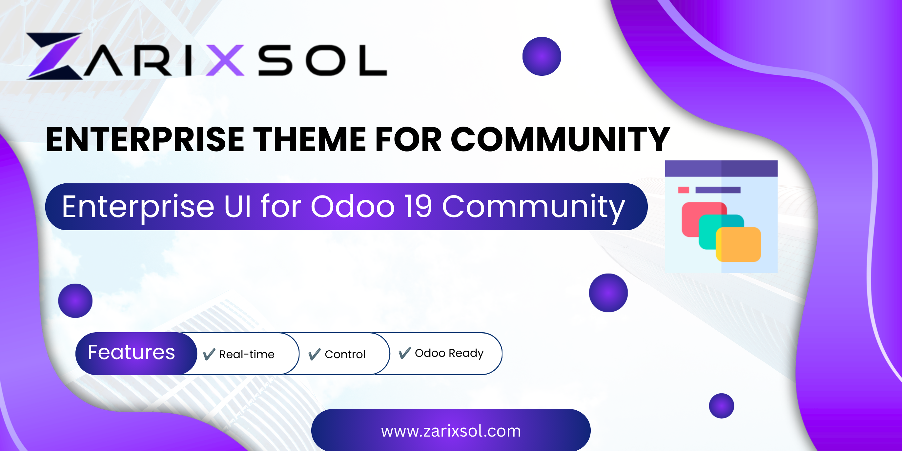

The backend look for Odoo 20 Community: a home menu app grid with a greeting, gradient action buttons, WhatsApp buttons in WhatsApp's colours, forms as cards, and light, dark or system mode per user.

Built on Enterprise Theme for Community by Zarixsol (https://www.zarixsol.com), LGPL-3.